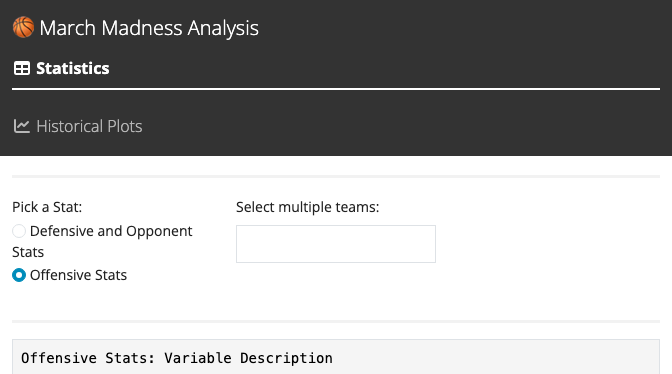

library(tidyverse)
library(plotly)
library(shiny)
library(bslib)
mm24Qualified <- read_csv("mm24_TournamentTeams.csv")
mmHist <- read_csv("mmHistorical.csv")
mm24Qualified <-
mm24Qualified %>%
select(-Rec) %>%
rename(Games_Played = G) %>%
mutate(Team = as.character(Team)) %>%
separate(Team, sep = ",", into = c("Team", "Tournament_Status")) %>%
separate(Team, sep = "(?<=\\D)(?=\\d)",
into = c("Team", "PlayOff_Seed")) %>%
separate(PlayOff_Seed, sep = "\\D", into = c("PlayOff_Seed", "rand")) %>%
select(-rand, -Tournament_Status) %>%
mutate(Conf = as.factor(Conf),
PlayOff_Seed = as.integer(PlayOff_Seed))
mmHist <-
mmHist %>%
rename(`Seed 1` = Seed...5,
`Score 1` = Score...6,
`Team 1` = Team...7,
`Team 2` = Team...8,
`Score 2` = Score...9,
`Seed 2` = Seed...10) %>%
select(-`Region Number`) %>%
mutate(Round = as.factor(Round),
`Region Name` = as.factor(`Region Name`)) %>%
mutate(winner_score = ifelse(`Score 1` > `Score 2`, `Score 1`, `Score 2`),
winning_team = ifelse(`Score 1` > `Score 2`, `Team 1`, `Team 2`),
losing_team = ifelse(`Score 1` > `Score 2`, `Team 2`, `Team 1`),
losing_score = ifelse(`Score 1` > `Score 2`, `Score 2`, `Score 1`),
scoreDiff = (winner_score-losing_score)) %>%
arrange(Year)
ui <- navbarPage(
title = "🏀 March Madness Analysis",
fluid = TRUE, theme = bs_theme(preset = "yeti"), position = "fixed-top",
tabPanel("Statistics",
icon = icon("table"),
tags$br(),
tags$br(),
titlePanel(tags$h1("2024 Tournament Results", style = "font-weight: bold; text-align: center; color: darkblue; font-size: 40px;")),
tags$p("Author: Matt Maslow", style = "font-size: 18px; text-align: center; color: darkblue;"),
tags$hr(style = "border-top: 3px solid #ccc;"),
fluidRow(
column(4, offset = 3, radioButtons("stat_type",
label = "Pick a Stat:",
choices = c("Defensive and Opponent Stats", "Offensive Stats"),
selected = "Offensive Stats")),
column(4, selectizeInput("Team_choice", label = "Select multiple teams:",
choices = mm24Qualified$Team,
multiple = TRUE))),
tags$hr(style = "border-top: 3px solid #ccc;"),
verbatimTextOutput("Variable_Description"),
tags$hr(style = "border-top: 3px solid #ccc;"),
dataTableOutput("Team_Table")
),
tabPanel("Historical Plots",
icon = icon("chart-line"),
tags$br(),
tags$br(),
titlePanel(tags$h1("Tournament Results from 1985 to 2019", style = "font-weight: bold; text-align: center; color: darkblue; font-size: 40px;")),
tags$p("Author: Matt Maslow", style = "font-size: 18px; text-align: center; color: darkblue;"),
tags$br(),
tags$hr(style = "border-top: 3px solid #ccc;"),
fluidRow(
column(3, selectInput("round_choice",
label = "Choose a playoff round:",
choices = c("1", "2", "3", "4", "5", "6"),
selected = "1") ),
column(3, selectInput("region_choice",
label = "Choose a region:",
choices = c("West", "East", "Midest", "Southeast", "Final Four", "Championship", "South", "Southwest"),
selected = "West") ),
column(3, sliderInput("year_range",
label = "Choose a year range:",
min = 1985, max = 2019,
value = c(1995, 2009),
sep = "") ),
column(3, selectInput("y_var_choice",
label = "Choose Varaible to plot on y-axis:",
choices = c("winner_score", "losing_score", "scoreDiff"),
selected = "winner_score") )),
tags$hr(style = "border-top: 3px solid #ccc;"),
tags$p("Select a playoff round from 1 to 6 (1 = first round, 2 = second round, 3 = Sweet 16, 4 = Elite 8, 5 = Final Four, 6 = Championship). The visualization updates based on the chosen round, showing teams' regions still in contention. Adjusting the years can enhance clarity. Utilize the interactive features in the top-right corner to compare game data on hover, displaying team names and results simultaneously.", style = "font-size: 14px; text-align: center; color: black;"),
tags$hr(style = "border-top: 3px solid #ccc;"),
plotlyOutput("history_plot", width = "100%", height = 600),
tags$hr(style = "border-top: 3px solid #ccc;"),
dataTableOutput("hist_table")
)
)
server <- function(input, output, session) {
observeEvent(input$round_choice, {
region_choices <- mmHist %>%
filter(Round == input$round_choice) %>%
distinct(`Region Name`) %>%
pull(`Region Name`)
updateSelectInput(inputId = "region_choice",
choices = region_choices)
})
mm24TableFiltered <- reactive({
if (input$stat_type == "Defensive and Opponent Stats"){
mm24TableFiltered <-
mm24Qualified %>%
filter(Team %in% input$Team_choice) %>%
select(Team, PlayOff_Seed, Conf, Games_Played, Barthag, AdjDE, `EFGD%`,
DRB, FTRD, `2P%D`, `3P%D`, `Adj T.`, WAB) %>%
arrange(PlayOff_Seed)
} else {
mm24TableFiltered <-
mm24Qualified %>%
filter(Team %in% input$Team_choice) %>%
select(Team, PlayOff_Seed, Conf, Games_Played, Barthag, AdjOE, `EFG%`,
ORB, FTR, `2P%`, `3P%`, `Adj T.`, WAB) %>%
arrange(PlayOff_Seed)
}
})
output$Variable_Description <- renderPrint({
if (input$stat_type == "Defensive and Opponent Stats"){
cat("Defensive and Opponent Stats: Variable Description\n",
"-------------------------------------------------------\n",
"Team: | Team name\n",
"PlayOff_Seed:| Playoff Seed\n",
"Conf: | Conference\n",
"Games_Played:| Number of games played\n",
"Barthag: | Power Rating (Chance of beating an average Division I team)\n",
"AdjDE: | Adjusted Defensive Efficiency (An estimate of points allowed per 100 possessions had against an average D1 offense)\n",
"EFGD%: | Effective Field Goal percentage scored\n",
"DRB: | Defensive Rebound percentage\n",
"FTRD: | Free Throw Rate allowed\n",
"2P%D: | Two-Point allowed\n",
"3P%D: | Three-Point allowed\n",
"Adj T.: | Adjusted Tempo (estimate of tempo (possessions per 40 minutes) a team has against a team that plays at avg D1 tempo)\n",
"WAB: | Wins Above Bubble (the cut off b/n making March Madness Tournament and or not\n"
)
} else {
cat("Offensive Stats: Variable Description\n",
"-------------------------------------------------------\n",
"Team: | Team name\n",
"PlayOff_Seed:| Playoff Seed\n",
"Conf: | Conference\n",
"Games_Played:| Number of games played\n",
"Barthag: | Power Rating (Chance of beating an average Division I team)\n",
"AdjOE: | Adjusted Offensive Efficiency (An estimate of points scored per 100 possessions has against an average D1 defense)\n",
"EFG%: | Effective Field Goal Percentage Allowed\n",
"ORB: | Offensive Rebound percentage\n",
"FTR: | Free Throw Rate (Free Throws Attempted per Field Goal Attempted)\n",
"2P%: | Two-Point Field Goal Percentage (Two-Point Field Goal Attempts per Field Goal Attempts)\n",
"3P%: | Three-Point Field Goal Percentage (Three-Point Field Goal Attempts per Field Goal Attempts)\n",
"Adj T.: | Adjusted Tempo (estimate of tempo (possessions per 40 minutes) a team has against a team that plays at avg D1 tempo)\n",
"WAB: | Wins Above Bubble (the cut off b/n making March Madness Tournament and or not\n"
)
}
})
output$Team_Table <-
renderDataTable({mm24TableFiltered()},
options = list(searching = FALSE, paging = FALSE, info = FALSE, scrollX = TRUE)
)
mmHistPlot <- reactive({
if (input$region_choice == "West"){
mmHist <- mmHist %>%
filter(`Region Name` == "West" & Round == input$round_choice & Year >= input$year_range[1] & Year <= input$year_range[2])
} else {
mmHist <-
mmHist %>%
filter(Round == input$round_choice & Year >= input$year_range[1] & Year <= input$year_range[2] & `Region Name` == input$region_choice)
}
})
output$history_plot <- renderPlotly({
if (input$y_var_choice == "winner_score"){
plt <- mmHistPlot() %>%
ggplot(aes(Year, winner_score, fill = winning_team, label = losing_score, label2 = losing_team))+
geom_point() +
theme_minimal() +
scale_colour_viridis_c() +
labs(title = if(input$year_range[1] == input$year_range[2]){
paste("The", input$year_range[1], "NCAA Historic Tournament Results:\n \t\tRegion:", input$region_choice, "& Round:", input$round_choice)
}else{
paste("The", input$year_range[1], "to", input$year_range[2], "NCAA Historic Tournament Results:\n \t\tRegion:", input$region_choice, "& Round:", input$round_choice)
},
x = "Year",
y = input$y_var_choice,
fill = "Winning Team") +
scale_x_continuous(breaks = seq(input$year_range[1], input$year_range[2], 5)) +
theme(legend.position = "none") +
theme(plot.title = element_text(face = "bold", size = 14))
ggplotly(plt, tooltip = c("x", "y", "fill", "label", "label2"))
} else if (input$y_var_choice == "losing_score"){
plt <- mmHistPlot() %>%
ggplot(aes(Year, losing_score, fill = losing_team, label = winner_score, label2 = winning_team))+
geom_point() +
theme_minimal() +
scale_colour_viridis_c() +
labs(title = if(input$year_range[1] == input$year_range[2]){
paste("The", input$year_range[1], "NCAA Historic Tournament Results:\n \t\tRegion:", input$region_choice, "& Round:", input$round_choice)
}else{
paste("The", input$year_range[1], "to", input$year_range[2], "NCAA Historic Tournament Results:\n \t\tRegion:", input$region_choice, "& Round:", input$round_choice)
},
x = "Year",
y = input$y_var_choice,
fill = "Losing Team") +
scale_x_continuous(breaks = seq(input$year_range[1], input$year_range[2], 5)) +
theme(legend.position = "none") +
theme(plot.title = element_text(face = "bold", size = 14))
ggplotly(plt, tooltip = c("x", "y", "fill", "label", "label2"))
} else if (input$y_var_choice == "scoreDiff"){
plt <- mmHistPlot() %>%
ggplot(aes(Year, scoreDiff, fill = winning_team, label = winner_score, label2 = losing_team, label3 = losing_score))+
geom_point() +
theme_minimal() +
scale_colour_viridis_c() +
labs(title = if(input$year_range[1] == input$year_range[2]){
paste("The", input$year_range[1], "NCAA Historic Tournament Results:\n \t\tRegion:", input$region_choice, "& Round:", input$round_choice)
}else{
paste("The", input$year_range[1], "to", input$year_range[2], "NCAA Historic Tournament Results:\n \t\tRegion:", input$region_choice, "& Round:", input$round_choice)
},
x = "Year",
y = "Diff in Winning versus Losing scores",
fill = "Winning Team") +
scale_x_continuous(breaks = seq(input$year_range[1], input$year_range[2], 5)) +
theme(legend.position = "none") +
theme(plot.title = element_text(face = "bold", size = 14))
ggplotly(plt, tooltip = c("x", "y", "fill", "label", "label2", "label3"))
}
})
output$hist_table <- renderDataTable({
mmHistPlot() %>%
select(Year, Round, `Region Name`, `Seed 1`, `Team 1`, `Score 1`, `Seed 2`, `Team 2`, `Score 2`) %>%
mutate(Winner = ifelse(`Score 1` > `Score 2`, `Team 1`, `Team 2`))
}, options = list(searching = FALSE, paging = FALSE, info = FALSE, scrollX = TRUE))
}
shinyApp(ui, server)